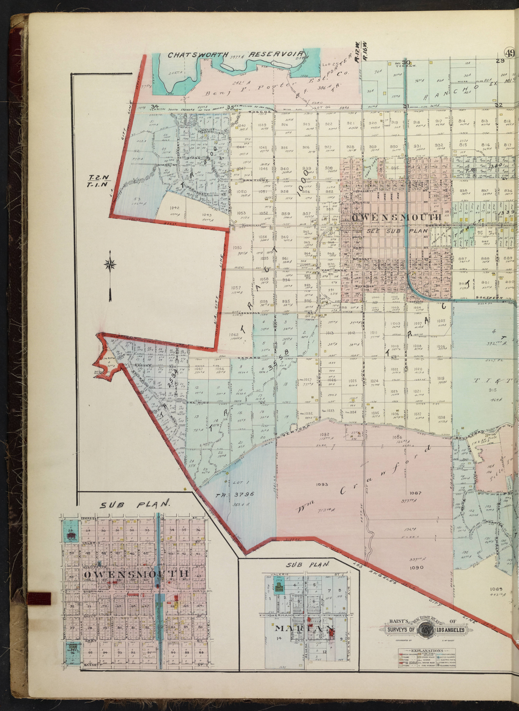

Hospice Care in West Hills, California
Eternal Life Hospice provides physician-supported hospice care for eligible patients and families in West Hills and surrounding communities. Care may be provided in private homes, assisted-living communities, residential-care settings and skilled-nursing facilities throughout Los Angeles County.
Hospice Care in West Hills at a Glance
Eternal Life Hospice serves West Hills families with Medicare-certified, physician-supported hospice care — at home, in assisted-living communities and in skilled-nursing facilities throughout the West San Fernando Valley. Our team can begin a clinical evaluation the same day a referral is received.
Hospice care at home in West Hills, California
West Hills is a quiet, family-oriented community at the western edge of the San Fernando Valley, bordered by Chatsworth, Canoga Park and the hills above the 118 Freeway. Many seniors here live in established single-family homes and prefer to remain there for as long as possible. Eternal Life Hospice makes home-based hospice care a reality for West Hills families — with regular nursing visits, aide support, chaplaincy and social work provided on a schedule that fits the household's rhythm.
We also serve Chatsworth, Canoga Park, Woodland Hills, Calabasas and nearby Simi Valley, giving families at the western edge of LA County access to seamless cross-county coverage.
Explore hospice care in Chatsworth, Canoga Park, Woodland Hills and Calabasas. Or explore hospice care across our full service area.
Hospice services for West Hills families
Hospice care is comfort-focused care for an eligible patient with a terminal illness, provided under physician direction after a clinical evaluation. Eternal Life Hospice coordinates nursing, aide support, social work, chaplaincy, medications, equipment and family education around one individualized plan of care.
Read when it may be time to consider hospice, what happens in the first 48 hours, and how the Medicare hospice benefit works. A conversation with our team can clarify the next step without pressure.
Care settings in West Hills
Medicare hospice coverage
Most Medicare-covered hospice services have little to no out-of-pocket cost. Limited copayments may apply in specific circumstances. Coverage depends on eligibility, the terminal diagnosis and the individualized plan of care. Learn about Medicare hospice coverage.
Resources for families in West Hills
Use the Family Guide to compare providers and prepare for a hospice conversation, or read how to choose a hospice. These resources explain the general process; our team can answer questions about care in West Hills and Los Angeles County.
For physicians and care professionals in West Hills
Physicians, discharge planners and care coordinators serving West Hills and West San Fernando Valley can refer an eligible patient for hospice evaluation through our professional pathway.
Refer a Hospice Patient →Common questions about hospice in West Hills
Does Eternal Life Hospice serve West Hills?
Yes. West Hills is within our active service area. We provide hospice care at private residences, assisted-living communities and skilled-nursing facilities throughout the city and West San Fernando Valley.
Does Eternal Life Hospice serve patients near the West Hills Hospital and Medical Center?
Yes. Our team coordinates with hospital social workers and discharge planners at West Hills Hospital and area facilities to ensure smooth transitions from hospital care to home-based hospice.
Hospice Guidance for Families in West Hills
A conversation costs nothing and brings clarity. We will guide you from there.